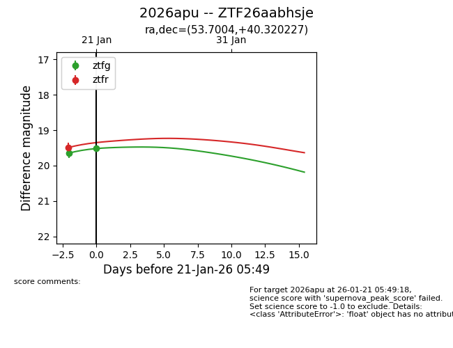
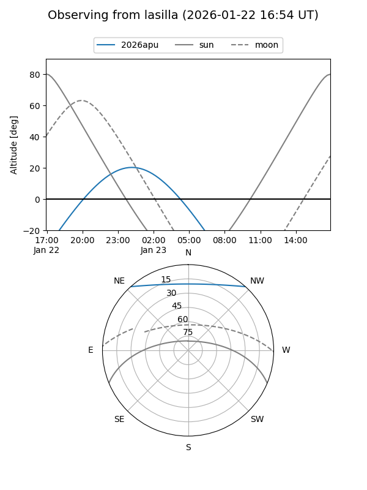
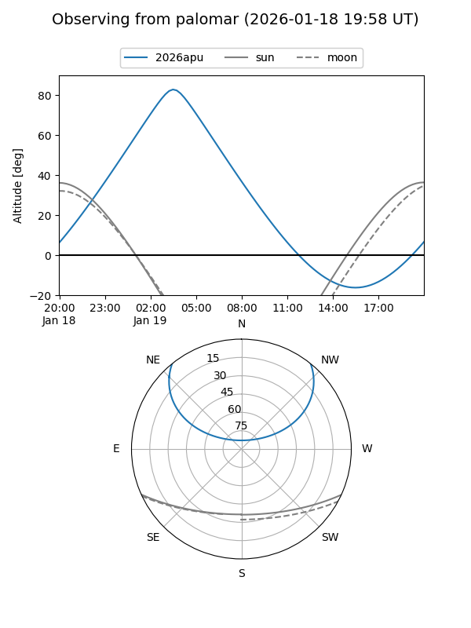
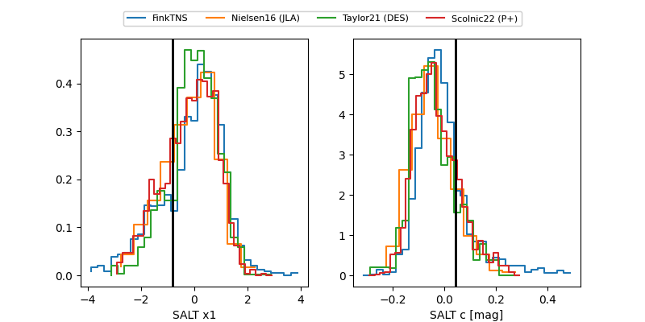

2026apu
Target 2026apu at 2026-01-19 07:05
Aliases and brokers:
FINK: link
Lasair: link
ALeRCE: link
TNS: link
YSE: link
alt names
ZTF26aabhsje (ztf,fink_ztf)
2026apu (tns,yse)
Coordinates:
equatorial (ra, dec) = 53.7004,+40.32023
equatorial (HMS+DMS) = 03:34:48.09,+40:19:12.82
galactic (l, b) = (153.6576,-12.60941)
Flags:
Photometry:
last ztfg=19.65, ztfr=19.49
1 ztfg, 1 ztfr detections
Lightcurve

Visibility


Additional plots
